Case study · Concept, brand identity, social e app · 2026
Momento
Non è una spa, è un “simulatore di fine”. Un servizio di wellness estremo che ti porta al confine biologico, per darti una prospettiva che nessun viaggio o droga può darti.
- Ruolo
- Concept, naming, brand identity, social, app, guerrilla
- Anno
- 2026
- Consegne
- Logo, palette, tipografia, key visual, certificato, kit, Instagram, app, azione in strada
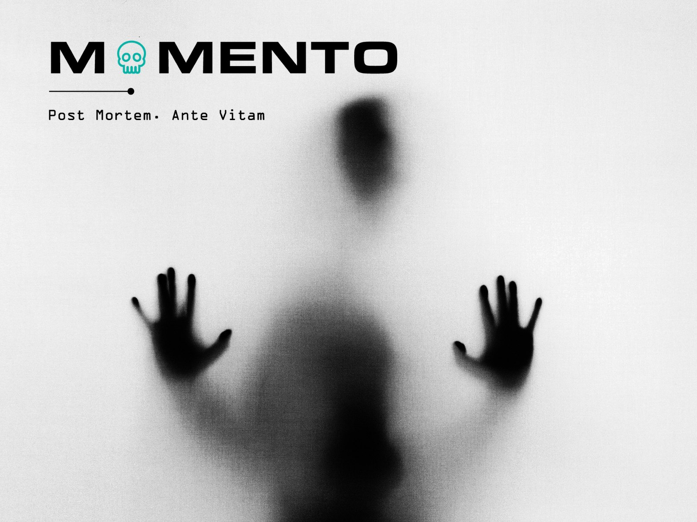
“Se prendo la morte nella mia vita, se la riconosco e la guardo in faccia, mi libererò dall'angoscia della morte e dalla meschinità della vita.”
Guardare la fine non è deprimente: è l'unico modo per smettere di vivere una vita “meschina”, fatta di distrazioni e stress inutile, e iniziare a vivere in modo autentico. MOMENTO trasforma questa idea in un'esperienza.
01
Nome e logo
MOMENTO o MEMENTO? Il significato è doppio: memento in latino vuol dire “ricorda”. Nel logo la O diventa un teschio, e la linea sottile con il punto nasce dalla flatline: quando il battito si ferma, la linea diventa dritta. Il payoff: “Post Mortem. Ante Vitam.”
02
Palette
Quattro colori, ognuno con un ruolo nel racconto.
- #FFFFFFBiancoLa luce, il momento della risposta e della rinascita interiore.
- #B3B3B3GrigioIl funerale, l'ascolto interiore che offusca il pensiero.
- #000000NeroIl buio, il silenzio, la paura dell'ignoto.
- #03B1A5Verde cobalto chiaroIl distacco emotivo: l'utente è un caso clinico, un file da processare.
03
Tipografia
OCR A, usato per i titoli: la tipografia appare come un referto medico o un'istruzione di sistema, senza calore umano superfluo.
04
Key visual
Il linguaggio visivo esplora il confine tra presenza e assenza. Contrasti netti, grana fotografica densa ed elementi fuori fuoco (e non) raccontano il pericolo non come un evento, ma come una sensazione. Ogni immagine è un frammento di tensione che cattura l'istinto di sopravvivenza.
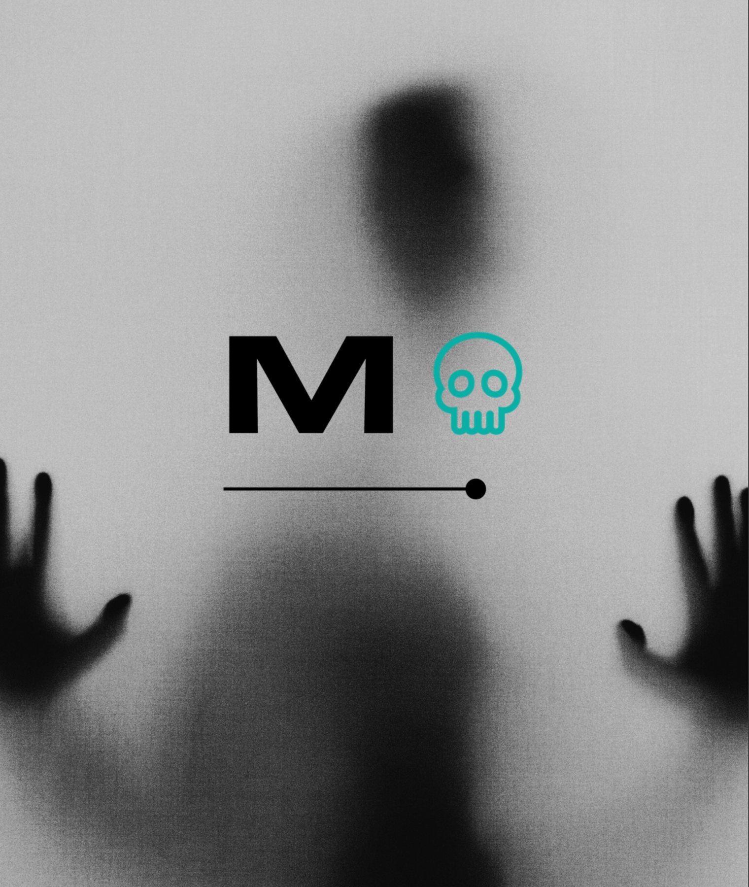
05
L'esperienza
Quattro fasi, dall'invito al ritorno alla vita.
-
Il rito d'ingresso
Data emotivo: sette giorni prima l'utente compila un testamento su un'app, confessando rimpianti, segreti e legami. L'algoritmo li usa per costruire il suo funerale personalizzato.
Convocazione: a casa arriva una scatola metallica con un sensore biometrico da indossare, che monitora lo stress pre-morte. Al check-in si firma il Certificato di Morte Temporanea e si lascia ogni oggetto personale.
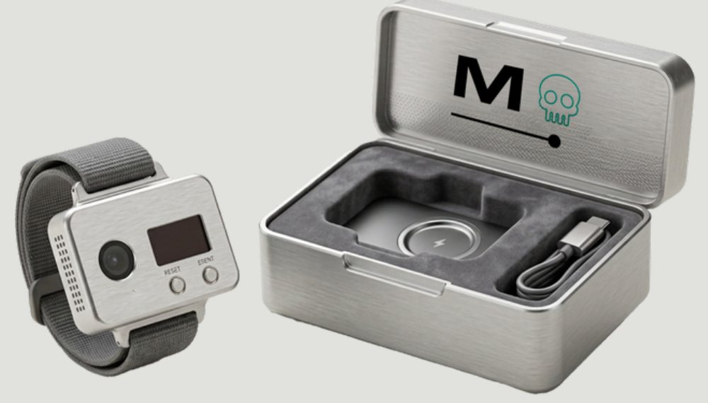
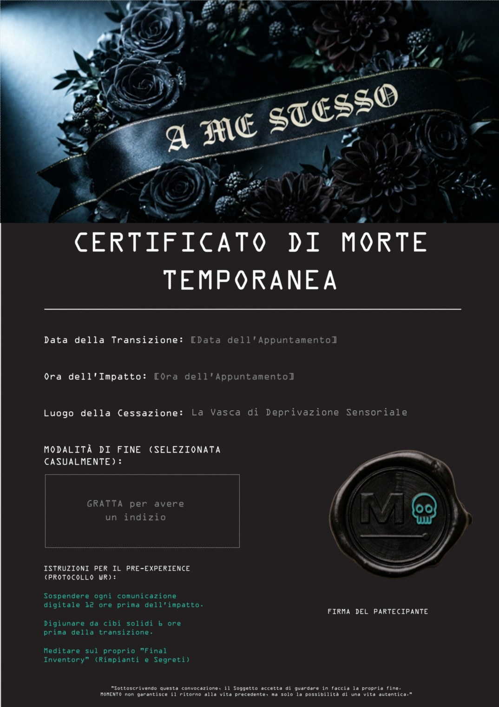
-
L'attività
La vasca sensoriale: l'utente galleggia in assenza di peso in acqua salina a temperatura corporea. Il corpo svanisce.
Capitolo 1, la morte casuale: il visore attiva uno scenario d'impatto scelto dall'algoritmo. Capitolo 2, il funerale: dal punto di vista della bara l'utente assiste alla propria veglia e ascolta un elogio funebre basato sui suoi rimpianti reali.
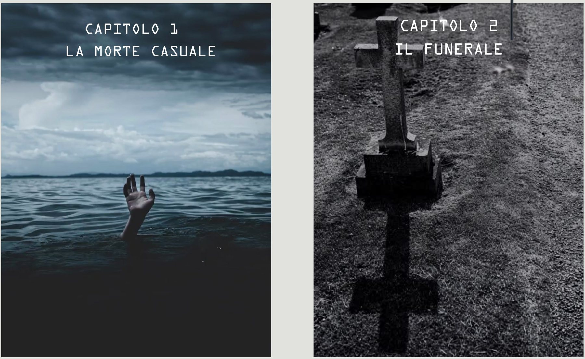
-
Il climax e il reset
La sepoltura: il coperchio si chiude. Blackout totale: per 60 secondi, il silenzio e il vuoto assoluto del nulla.
La rinascita: un getto d'aria fredda e una luce bianca accecante riportano l'utente in vita. Il ritorno alla gravità.
-
Touchpoint post-mortem
Ceneri di identità: all'uscita l'utente riceve un'urna con le ceneri del suo vecchio nome.
The return call: alla riaccensione del telefono compare un unico messaggio.
“C'è qualcosa che non hai detto a qualcuno? Fallo ora.”
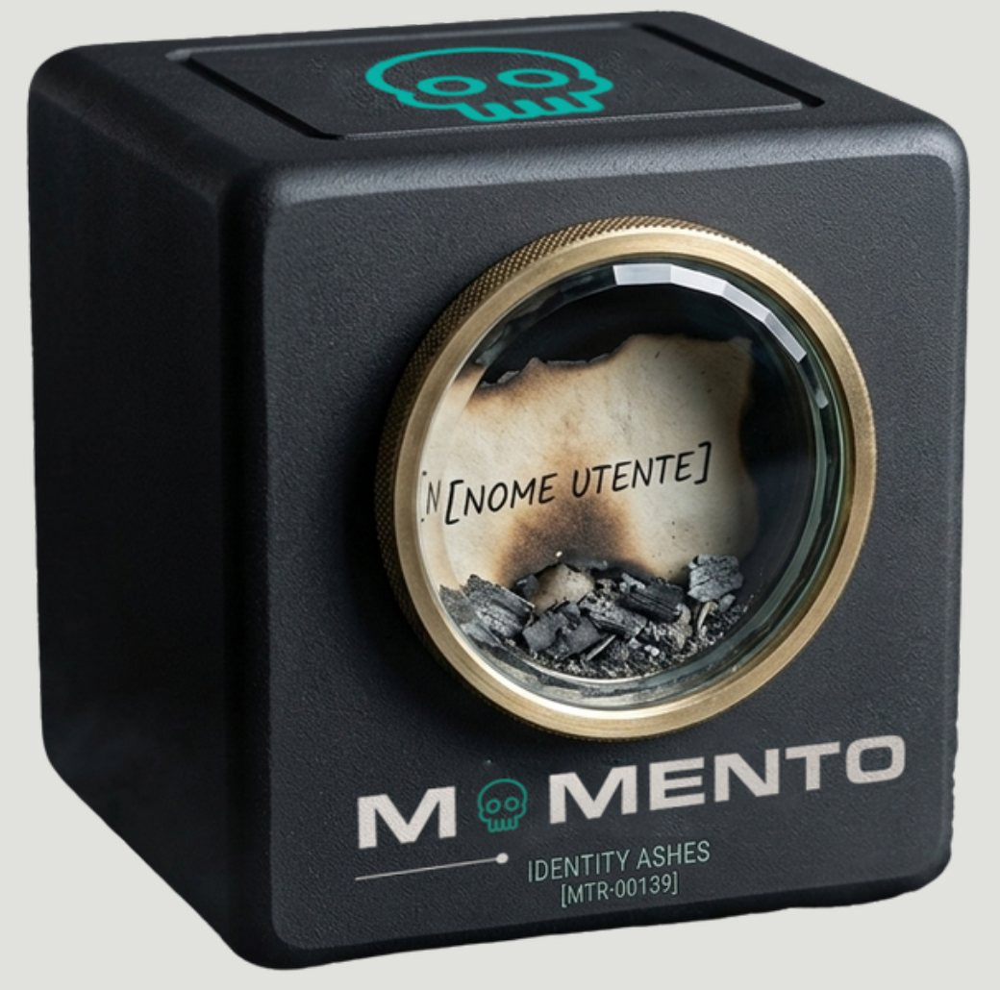
06
Social media
Un feed Instagram che parla come un elogio funebre, e stories da sfogliare come un battito che si ferma. Le stories interattive chiedono “Quale ti capiterà?” e invitano a scuotere il telefono.
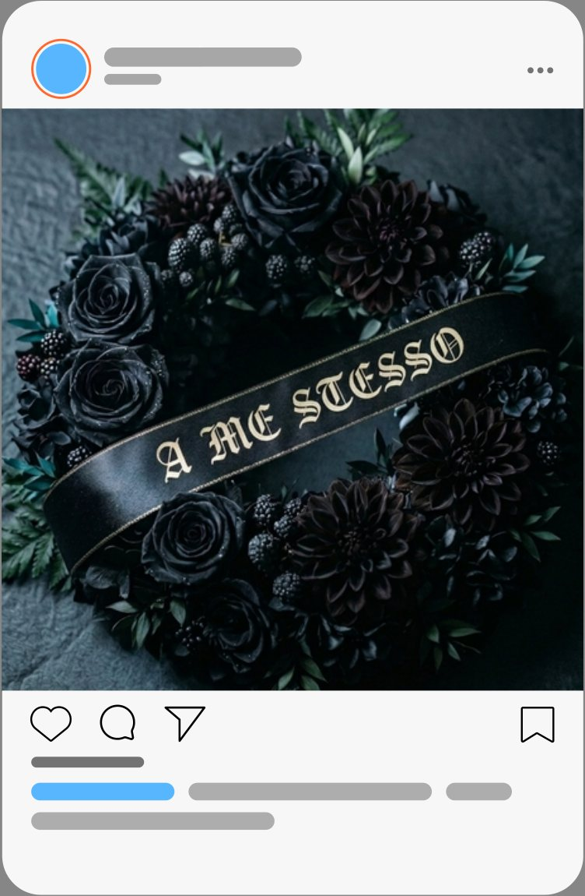
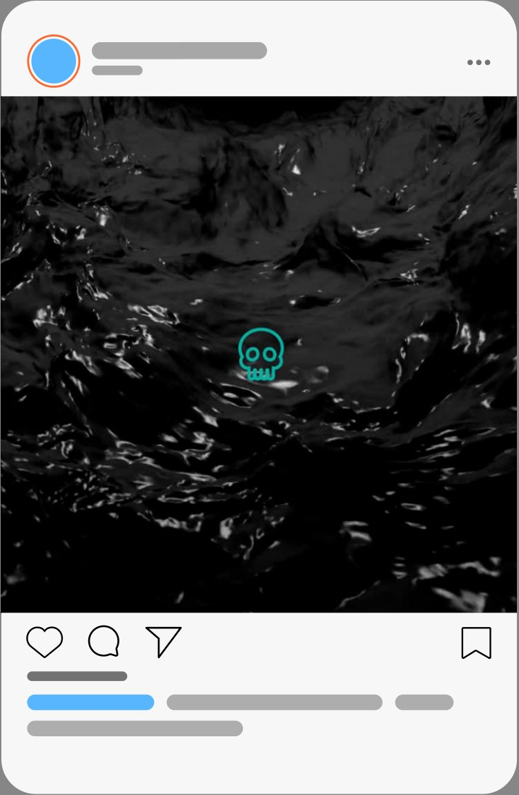
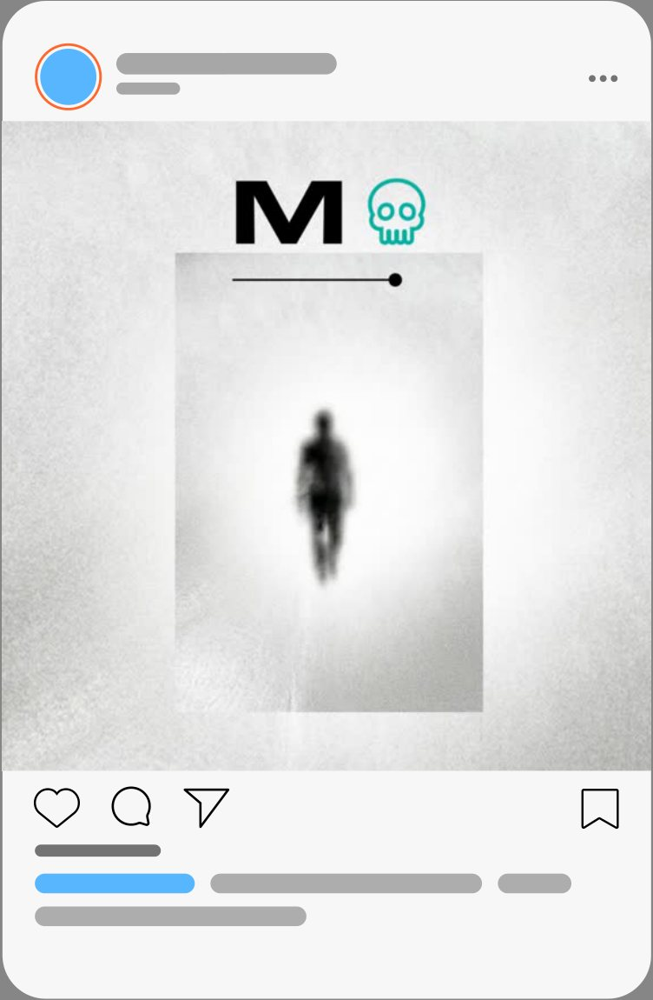
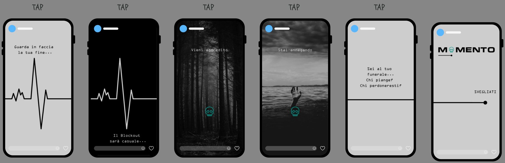
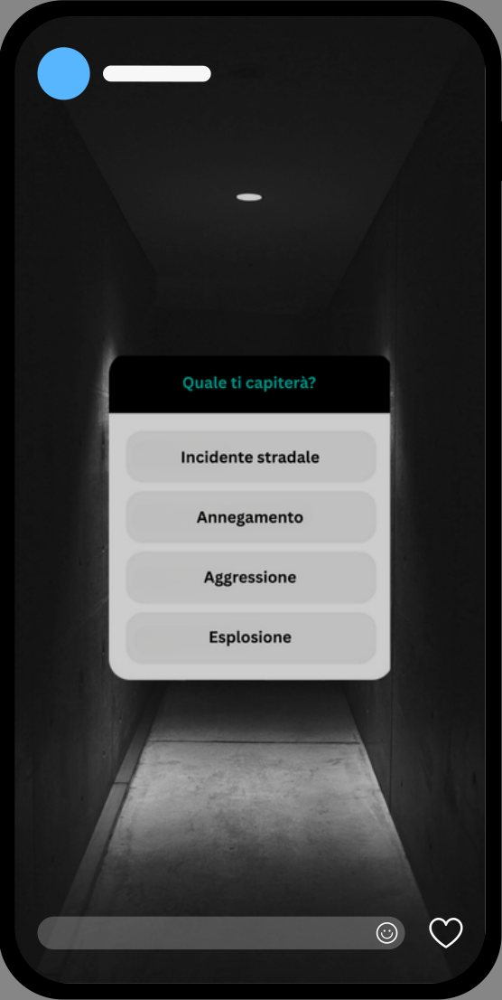
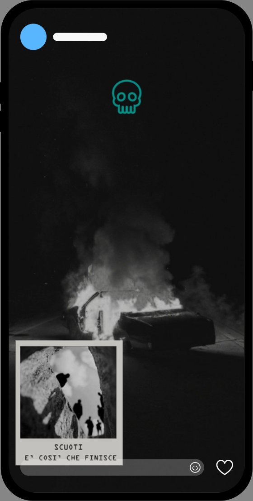
07
L'app: testamento digitale
Un protocollo tecnico di pre-transizione che trasforma l'esistenza dell'utente in un resoconto prima dell'evento fisico. Con un'interfaccia monospaziata il soggetto compila i moduli obbligatori per il proprio distacco: l'elogio funebre, i segreti da archiviare, i dati biometrici del sensore e perfino la colonna sonora del suo funerale.
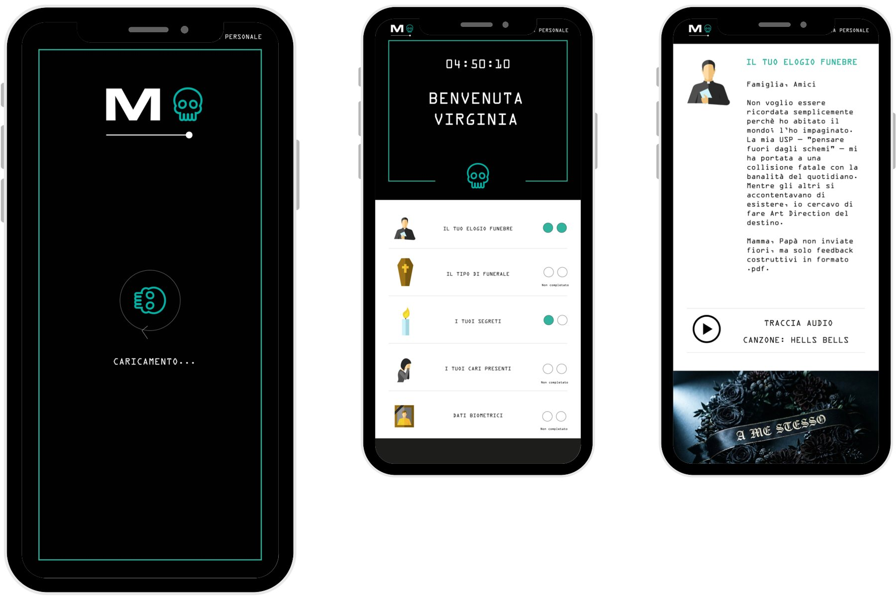
08
Guerrilla
Nelle piazze principali di Torino compaiono all'improvviso bare aperte in metallo nero opaco. Dentro ognuna uno schermo LED trasmette in loop un funerale visto dal basso. Accanto, un “Ufficiale della Transizione” in camice bianco consegna una busta nera sigillata con il certificato e un codice che porta all'app. Le impronte sul marciapiede guidano fino al luogo.
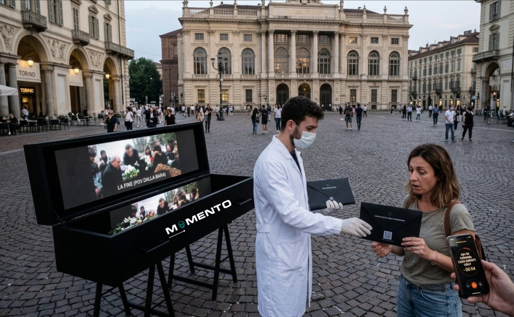
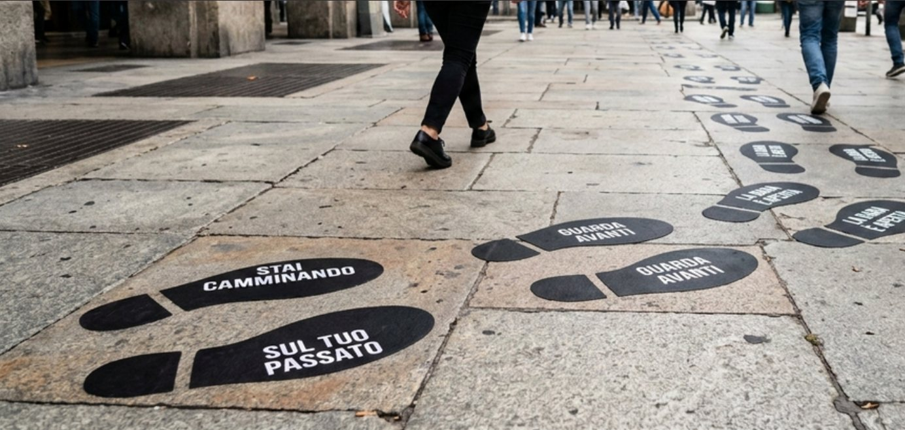
Post Mortem. Ante Vitam.